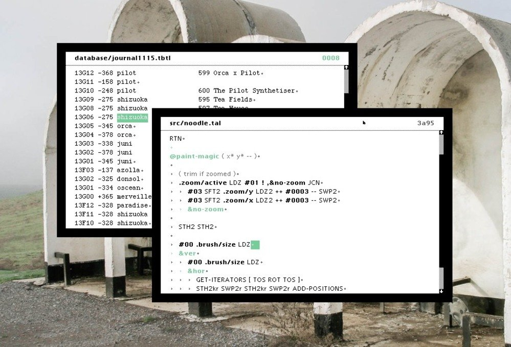

uxn design
Because Uxn was explicitly created to exist as software hosted on pre-existing hardware, the design was advised primarily by relative software complexity, not by how fast it could be made to run. Features were weighted against the relative difficulty they would add for programmers implementing their own emulators.
Stack-machines, and postfix arithmetic, are ideal candidates for this scale of personal computing. Not only does it make for extremely basic compilers, the resulting programs are succinct and translate well to pen & paper computing.
With only 64kb of memory, it will never run Chrome, TensorFlow or a blockchain. It sucks at doing most modern computing, but it’s also sort of the point, it's more about finding what new things could be made in such a small system.
What's the benefit of Uxn over C, when just about everything has a C compiler?
While terminal utilities can be made portable, cross-platform graphical development is different. Even building projects for platforms with C compilers, such as Linux and Plan 9, will require a near total rewrite, whereas porting the thin layer that is the uxn emulator will allow that same rom file to be used on both systems.
Why create a smol virtual computer?
We want to produce lasting versions of our tools and games, and by using simpler systems(the UxnVM is about 200 lines of C) we can build more resilient software due to their lack of dependencies, and support older hardware when possible. The Uxn emulator is extremely simple, and can be ported to an unsupported system quickly. Try Uxn on NintendoDS, Gameboy Advance, Rasperry Pi Pico or on desktop.
As it stands today, modern software is built with extreme short-sightedness, designed to be run on disposable electronics and near impossible to maintain, so we decided to not participate in this race to the bottom. Our aim is to create a machine that focuses on answering the handful of tasks we need, which is centered around building playful audio/visual experiences.
To borrow the words of Viznut Heikkilä on permacomputing, we're interested in cultural and ecological permanence. "That is, how to give computers a meaningful and sustainable place in a human civilization that has a meaningful and sustainable place in the planetary biosphere".
story
Back in 2016 when first operating on a sailboat, we experienced frequent failures with both software & hardware, largely due to our small energy storage and lack of reliable connectivity. The solution was to create tools that would be better suited to our needs. The objective was to replace the bloated, closed-source or subscription software that we were using to do creative work, such as Photoshop, Xcode and Ableton. We were somewhat familiar with web technologies, so we decided to build our programs on this new framework called Electron.
While solving some of our issues, Electron was rapidly increasing in size and soon joined the rest of the software that we wanted to do away with. Our focus shifted toward reducing our energy use, and to ensure reliability by removing all dependencies.
To transition toward our new goals, we developed offline web versions as temporary stand-ins while researching ways to build more resilient software. We eventually ported our tools to C, but while we had achieved ideal energy usage, portability was still an issue, so we kept looking. We learnt 6502 assembly, seeing players run our NES game on all these different platforms gave us a new idea.
And so, in 2021 we took our biggest leap yet toward longtermism and designed a small virtual machine with a focus on implementability; meaning that moving forward, our software will live on a virtual machine. In other words, the code will stop having to be ported, but instead to make something available on a new platform would our needs or devices change, the emulator remains the only piece of code to be ported, which is explicitly designed to be easily implemented.
This is where we are now. uxn may solve our cross-platform issues, while being extremely light. It took us a long while to get here, we hope that one day the Uxn versions of our software replace the desktop and web versions [16.05.21].
Go slow, and fix things.